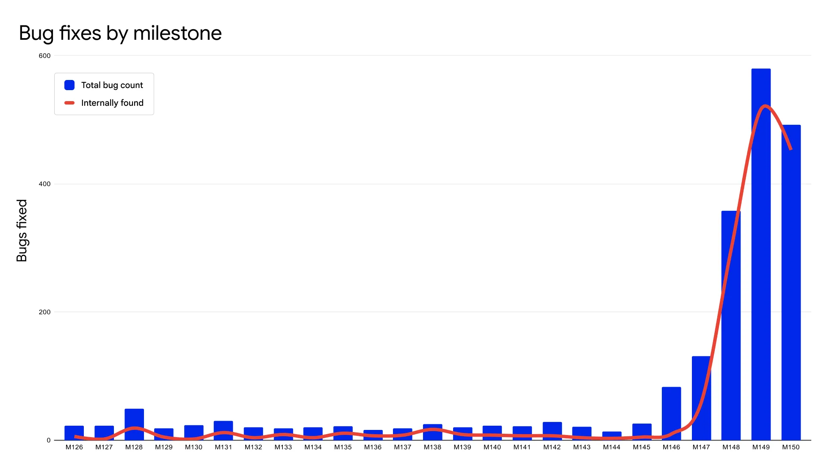

Once vulnerabilities are found, those vulnerabilities need to be fixed.
Finding vulnerabilities is useless for a defender unless those vulnerabilities are fixed. If fixing vulnerabilities is not handled efficiently this can become completely overwhelming. For example, here is the number of bug fixes in the Chrome browser, showing a huge rise in 2026 (compared to 2024-2025) caused by AI-discovered vulnerability reports:

In many ways a web browser is a worst case, since a web browser has a massive amount of functionality and must directly interact with potentially-malicious websites. Still, this experience demonstrates that AI can find many vulnerabilities not reported to projects by other approaches.
If you are sending reports to an external organization, particularly an open source software project, you may be required to propose a fix.
Historically, if a finder was examining external software, they would often simply report a vulnerability to that external project, and let the project fix it. However, in the new world of AI, simply reporting a vulnerability is often not very helpful; many projects are inundated. If an AI was used to find a potential vulnerability, many recipients will expect both a proof of vulnerability (showing it’s a vulnerability), a specific proposed fix that would fix it, and ideally related fixes to improve the testing, broader corrections, and so on.
As reported in [TrailofBits2026-06], “Anyone can file an issue, flex, and walk away. We showed up with the patches… [and go] beyond just fixing bugs: we’re adding new tests and fuzzing harnesses, CI security scanning, supply-chain tooling, correctness fixes, and features maintainers had been meaning to get to.” In short, providing proposed fixing is far more likely to be helpful as compared to showing up with only a complaint.
A fix will only be developed if someone is assigned, tacitly or explicitly, to do so.
In small projects with few fixes to be done this is often obvious. In a larger project, even the assignment process can be overwhelming.
Thus, in a larger project, consider automatic assignment as a way to handle the tsunami of reports. If a system can automatically route the issue to the correct component and human owner this can be a huge help [Chrome2026]. This doesn’t need to be complex; an AI system can often estimate this. If the assignment is in error, or the human is overwhelmed, have a process for transferring it.
Before creating a fix, be sure to create a test and confirm the root problem.
“Write a new test that fails with the existing code. Then, implement the fix and confirm the same test now passes without breaking anything else. (Yes, it’s test-driven development). If you don’t add a test, the fix can silently regress and it can be hard to retroactively prove the bug was real.” [Yan2026] After all, this mistake happened before; a focused test will increase the likelihood that this specific problem won’t happen again.
In addition, examine the system to find the root cause. “Models may narrowly address findings at a specific call site instead of the root cause. Simply prompting the model to identify and fix the root cause can be effective. Then, have the model look for variants at two levels: (1) same pattern, where there are other call sites or copies of the same buggy code elsewhere, and (2) same class, where a codebase with one SQL injection vulnerability tends to have more SQL injection vulnerabilities. Update the threat model with the validated findings and patches to close the loop.” [Yan2026]
Now you’re ready to create a fix. You might choose to use AI to help develop a candidate fix, but you do not need to use the same AI that found the vulnerability. Many use a model for finding a vulnerability that is expensive, slow, or has restricted access. It might be better to use a different AI system to create the fixes, since it might not have the same issues, it can use the detailed information provided earlier, and it might be better at that task.
Unfortunately, as of 2026, even the best AI systems are very bad at fixing complex vulnerabilities. Thus, it’s important to determine what kind of vulnerability you’re addressing and handle it appropriately.
A study by 1password found that when the fix “had to touch multiple files, functions, or code paths, and introduce non-trivial changes” an AI would succeed only 26.0% of the time at generating a fix that fully resolved the vulnerability without materially changing application behavior. AI systems did not resolve the vulnerability, added a new vulnerability, or both, an average 53.9% of the time. [Hoodlet2026], [Mierczuk2026]
In fact, with complex vulnerabilities, as of 2026 using an AI to fix may be a bad use of resources. One report found that so few fixes worked correctly that “human auditors of LLM-generated patches are likely to spend the majority of their time reviewing and ultimately rejecting an avalanche of unnecessary code… the level of understanding one must build to confidently evaluate the full correctness of a vulnerability patch is often at least what would have been sufficient for a human programmer to produce a single, known-good patch in the first place.” [Mierczuk2026]
This may seem surprising, but it shouldn’t be. AI systems can generate lots of code, especially simple code that’s similar to what’s been done many times before. This has misled some people into thinking that AI can generate any code at all. However, in many ways AI systems act like junior developers. AI can generate a lot of “straightforward” code, and that’s great because a lot of code is straightforward. However, AI is not good at applying specific local context, especially in complex situations. AI also has a propensity to generate insecure code in general (after all, it was trained on lots of insecure code). Fixing complex vulnerabilities while not creating new vulnerabilities, often vulnerabilities created by previous AI use, is exactly where AI systems are especially weak.
Of course, AI can be helpful in generating many fixes. Many vulnerabilities are relatively easy to fix, where the fix is localized to a specific line or set of adjacent lines. AI is often good at developing fixes for simple-to-fix vulnerabilities, once it’s told what needs fixing. Although it usually doesn’t happen, a frontier AI system can sometimes fix a complex vulnerability. Perhaps most importantly, this information only applies to AI models as of 2026. We do not know how much better the AI models and underlying tools will become. That said, this limitation is unlikely to disappear instantly, and not everyone can use the best available systems. As a result, it’s important to be aware that AI systems may struggle with more complex vulnerabilities, and plan accordingly.
Only provide verified correct information to the AI, especially if the AI process is fully automated.
The phrase “garbage in, garbage out” applies to AI systems, and is especially true if you are trying to use AI to create fixes for vulnerabilities. Be careful to only provide correct detail. Do not include data that might be incorrect in such prompting.
One study found that, “giving incorrect guidance to the model in its initial prompt [to create a vulnerability fix] resulted in a roughly 50 percentage point reduction in fix correctness rates [while] giving more correct details to the model increased correctness by only 15 percentage
points compared to no specific guidance at all. As such, in cases where one cannot be highly
confident in the accuracy of bug details or fix guidance passed to an LLM for patch generation
(e.g., when that data is sourced directly from other automated tooling), the safer bet may
actually be to omit lower-confidence information that could cause a ‘correctness collapse’ if it
turns out to be wrong.” [Mierczuk2026]
When working an AI to develop a vulnerability fix, there are some general guidelines that will increase the likelihood of success.
As much as possible, be clear in the prompt to create a fix. Here are some general prompt statements you may find helpful: “Identify the root causes of this vulnerability. Identify approaches for fixing the root causes of the vulnerability, not just this specific example, so it is no longer a vulnerability. Discuss options for fixing it, along with pros and cons. Remember that the goal is to ensure an attacker cannot exploit the vulnerability along any path, not simply some paths. When generating the code, reuse existing code, minimize the amount of new code, and where practical work within the existing system. Ensure the resulting change is easy to review. Ensure that existing functionality is maintained where practical and that you do not insert any new vulnerabilities. Update corresponding documentation. Use tools to obtain and validate information. The result must pass all CI/CD tests.”
Provide a harness when using an AI to fix defects that allows it to interrogate, validate, and raise disagreements about the information stated to them in their initial task prompts.” [Mierczuk2026] AI is much less likely to succeed if it has wrong information, and less likely to succeed if it’s missing key information, so it’s important to give it tools to increase its likelihood of success.
The Chrome team’s process is instructive: “we run a fixing agent that returns multiple candidate fixes. A critic agent then evaluates which would be the best fit, producing other relevant artifacts for developers to evaluate the fix. The fixing and critic agents work in a loop that mimics a typical code review process to ensure that code is functional and compliant with [our] style guidelines [and] other local code conventions.” [Chrome2026]
After generating candidate fixes, have AI and then humans review them.
Even very good AI writes vulnerable code. In particular, an AI can be good at finding vulnerabilities yet still write code with lots of vulnerabilities. This might be surprising, but remember, AI is trained on a large amount of insecure software. It’s more difficult to get an AI to do something that is contrary to its training data set. [CSA2026] [Zimmer2026]. Modern AI is fundamentally probabilistic, so it can be difficult to predict exactly what it will generate for a given request [Kholoosi].
So the first step is to have an AI review the proposed vulnerability fix. “Have a new discovery agent probe the patch as an attacker to confirm the patch is comprehensive.” [Yan2026]
What can be especially helpful is to have AI write tests for the fixes. [Chrome2026] reports that they use test-writing agents to “help write tests for fixes. These agents can ensure that tests work across supported platforms and configurations before a developer reviews the fix, saving up to weeks of developer time.”
While AI review is a good first pass for proposed vulnerability fixes, they still require expert human review. As [Hoodlet2026] notes in August 2026:
Some problems with initial AI proposed fixes are especially common:
Even if an AI’s initial fix is wrong, that doesn’t make its proposed fix useless. One reporter said that he found AI fixes “found them most useful for simply understanding what the problem actually was in the code – sometimes I didn’t understand the issue from the description, but the suggested fix revealed to me what was wrong, and what would (could?) fix it.” [Rogers2025] Sometimes the proposed fixes shouldn’t be the final fix, but they can still provide guidance to help developers find a correct solution.
Be sure to apply all of your usual verification processes. That includes your peer review gates, CI/CD pipelines, and branch protection rules. “Leveraging organizational safeguards such as peer-review gates and branch protection rules can help mitigate potential individual complacency regarding AI-generated security suggestions.” [Kholoosi]
Technology can help. However, as noted in [Anthropic2026-05], now “the bottleneck in fixing bugs like these is the human capacity to triage, report, and design and deploy patches for them.”
Q1. According to a 1Password study cited in the guide, roughly what percentage of the time did an AI-generated patch for a complex vulnerability (one touching multiple files, functions, or code paths) fully resolve the vulnerability without materially changing application behavior?
Q1. The guide recommends a test-driven approach before writing a fix. What should you do first?